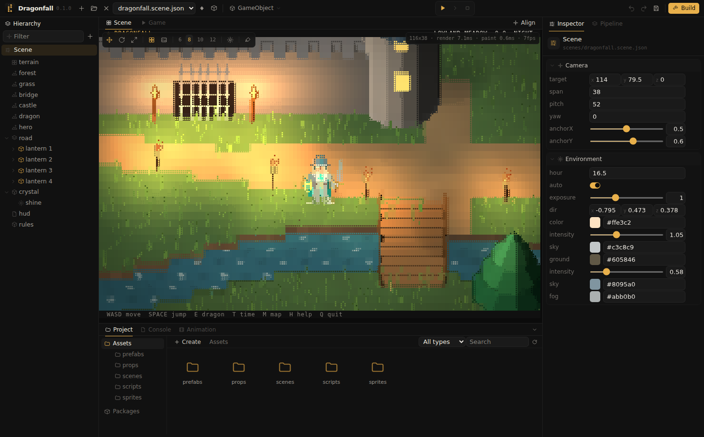
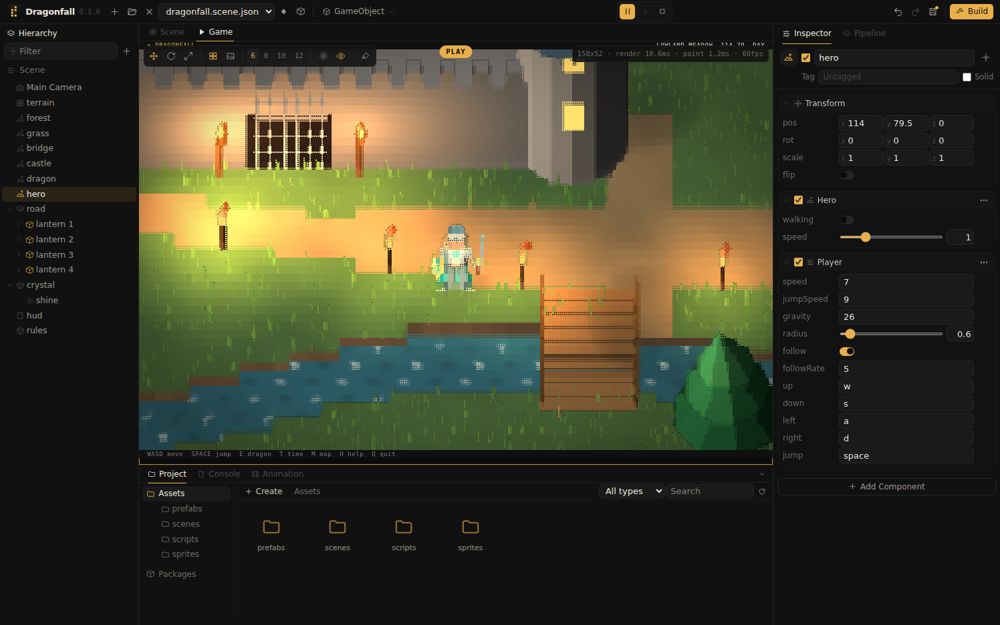

Your first game
This guide creates a project from the Dragonfall template, changes it in the editor, plays it, saves it and builds it.
1. Create a project
- Run
ascdii, for example with a double click. The editor opens at its start screen. - Select the Dragonfall template, enter a name, choose the location with Location and press Create. Empty creates a project that contains only a manifest and a start scene with a camera.
- The editor creates the folder
<location>/<name>/with a.ascdiiprojmanifest and the template's scenes, prefabs, sprites and scripts, and opens it.
Further projects can be created from the editor toolbar (Ctrl+N) or with ascdii new, see CLI reference.
2. Navigate

- Left drag pans the Scene view, right drag orbits it, the mouse wheel zooms.
- A click selects an object; the Inspector shows its components. F frames the selection.
- Live in the view toolbar animates water, wind, flames and clips while editing.
3. Edit the scene
- Select dragon in the Hierarchy and enable
awakein the Inspector. The dragon wakes and breathes fire. - Select Scene at the top of the Hierarchy and drag the
hourlabel sideways. The sun moves and the lanterns light up at night. - In the Project window, open prefabs and drag the lantern prefab onto the road in the Scene view.
- Move the lantern with the move tool (W): the red arrow moves along X, the green arrow along Y, the amber arrow changes the height, and the square in the middle moves it along the ground.
4. Play
Space or the play button starts play mode. The view switches to Game, which shows the game camera. With the view focused, W A S D move the knight, Space jumps, E wakes the dragon when the knight is near and T advances the time of day.

Play mode runs on a copy of the scene. Esc, or Play pressed again, stops it and restores the scene to its state before play.
5. Save
Ctrl+S saves the scene; the * in the window title disappears. New projects include a .gitignore that excludes the build/ folder, so the project folder can be kept under version control as it is.
6. Build
Build in the toolbar opens the build dialog. Select the platforms and the version and press Build. The result is a folder per platform containing the game, its compiled data and checksums, see Build.